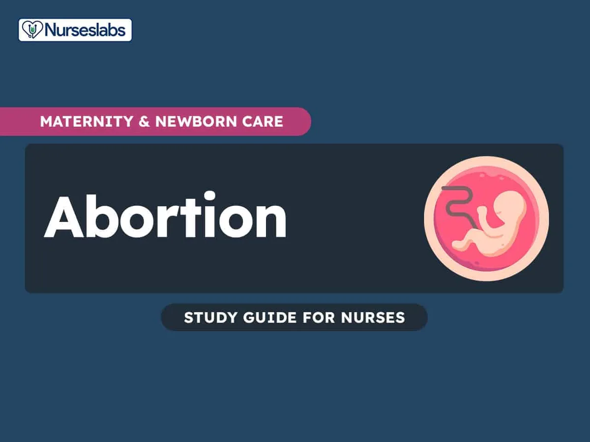

Expanded Nursing Uganda Explanation
Abortion should be reviewed through safe maternal and newborn assessment, early recognition of danger signs, respectful communication and timely referral. Connect the definition to vital signs, bleeding, fetal or newborn wellbeing, patient education and local protocol requirements.
01 ABORTIONS
Abortion is also defined as the termination of pregnancy prior to 28 weeks of gestation or delivery of a fetus weighing less than 500g.
It may be early or late abortion.
- Early abortion is the termination of pregnancy before 12 weeks of gestation .
- Late abortion is the termination of pregnancy between 12-24 weeks of gestation.
02 Causes of Abortion
Abortion can be categorized into
- Fetal , Maternal , Uterine and Local causes.
Fetal Causes:
- Malformation of the Zygote in Chromosomal Disorders : Abnormalities in the zygote’s chromosomal structure such as trisomy 21 (Down syndrome) or monosomy X (Turner syndrome) are examples of conditions that can result in fetal malformation and contribute to abortion.
- Abnormal Implantation in the Uterus: Includes conditions like placenta previa, where the placenta attaches near the internal os, can impact normal fetal development and lead to complications that may result in abortion. Abnormal implantation can disrupt the supply of nutrients and oxygen to the fetus, affecting its growth and development.
- Diseases of the Fertilized Ovum: Disorders affecting the fertilized ovum such as genetic or metabolic abnormalities, can compromise the viability of the embryo and contribute to spontaneous abortion. These diseases may interfere with the embryo’s ability to develop and thrive in the early stages of pregnancy.
- Chromosome Abnormalities of the Fetus (30% – 40%): Genetic irregularities in the fetus including numerical and structural chromosomal abnormalities, are significant contributors to spontaneous abortion. These abnormalities can disrupt normal fetal development and increase the likelihood of pregnancy loss.
Maternal Causes:
- Acute Illness with High Temperatures : Conditions like malaria, typhoid, rubella, etc., which can raise body temperatures.
- Chronic Illnesses : Persistent conditions like anaemia, chronic nephritis, diabetes mellitus (DM), syphilis, etc.
- Cervical Incompetence : Impaired cervical function leading to the inability to maintain a pregnancy.
- Severe Malnutrition : Inadequate nutritional support impacting maternal health and fetal development.
- Oxytocic Drugs : Medications that stimulate uterine contractions.
- Hormonal Insufficiency : Such as insufficient production of progesterone before placental formation, affecting decidua development. Thyroid Deficiency and Hyperthyroidism also increase the risk.
- Effects of Drugs Taken : Such as Cytotoxic Drugs which are toxic to cells, Radiation therapy, Overdose of malaria drugs, etc.
- Uterine Abnormalities : Such as Retroverted Uterus, Divided Uterus (Bicornuate) or Fibroids (Submucosal): Noncancerous growths in the uterus affecting implantation.
- Trauma : Severe Trauma on the Uterus informs of Impact injuries or falls or Insertion of Instruments or Foreign Bodies into the cervix, Operations Like Myomectomy.
- Immunological Factors : Antibodies Crossing the Placenta in maternal blood attacking fetal erythrocytes (rhesus incompatibility).
- Acute Emotional Disturbances like Severe Fright or Sudden Bereavement triggering contractions and potential abortions.
03 Predisposing Factors to Abortion
Unwanted Pregnancy :
- Too early (adolescence) : Teenage pregnancies are often unplanned and may result in abortion due to lack of resources, support, and education.
- Too frequent : Pregnancies that occur too close together may strain a woman’s physical and emotional resources, increasing the risk of abortion.
- Too late : Pregnancies that occur later in a woman’s reproductive life may carry increased health risks, leading some women to consider abortion.
Problem of Teenage Sexuality and Pregnancy:
- Lack of sex education and access to contraception can contribute to high rates of teenage pregnancy and abortion.
- Social and cultural factors may also influence teenage sexual behavior and the likelihood of unplanned pregnancy.
Low Preference Use of Family Planning:
- Inconsistent or incorrect use of family planning methods can lead to contraceptive failure and unplanned pregnancy.
- Lack of access to affordable and effective contraception can also contribute to unplanned pregnancy and abortion.
Sexual Coercion or Rape:
- Unwanted pregnancy resulting from sexual coercion or rape may lead to abortion, as the woman may not have consented to the pregnancy.
Unstable Relationship:
- Unstable or abusive relationships may contribute to unplanned pregnancy and abortion, as the woman may feel unsafe or unsupported in continuing the pregnancy.
Financial Constraints:
- Financial difficulties may make it difficult for a woman to afford the costs of raising a child, leading her to consider abortion.
Need to Continue with Education or Job:
- Some women may choose abortion in order to continue their education or maintain their job, as they may not have the resources or support to balance pregnancy and these other responsibilities.
Unfaithfulness :
- In some cases, a woman may choose abortion if she discovers that her partner has been unfaithful, as she may not want to raise a child with someone she no longer trusts.
04 PREVENTION OF ABORTIONS.
- Health educate the community about the dangers of unsafe abortion.
- Talk about the importance of family planning to the community.
- Provide family planning services to school girls.
- The government should strengthen the rule governing unsafe abortion.
- Good upbringing of children by the parents.
- Strengthening youth friendly services at all health facilities.
- Strengthening community based organization to teach the community on the dangers of unsafe abortion.
05 Types of Abortion
Abortions are broadly classified into spontaneous and induced types.
It is the most common type of pregnancy loss, occurring in about 10-20% of all pregnancies.
Types of Spontaneous Abortion:
- Threatened Abortion : Bleeding occurs in early pregnancy without the opening of the cervix or evacuation of the products of conception (POC). Resolves on its own with no medical intervention.
- Inevitable Abortion : The cervix is open and POC are visible indicating an unavoidable termination of pregnancy. The pregnancy will not continue and will proceed to incomplete or complete abortion.
- Incomplete Abortion : POC are partially expelled.
- Complete Abortion : POC are completely expelled.
- Habitual Abortion : Three or more recurrent spontaneous abortions
Types of Induced Abortion:
- Legal or Therapeutic Abortion: This type of abortion is performed to protect the life or health of the mother, or in cases of rape or incest.
- Illegal or Criminal Abortion : This type of abortion is performed outside the law and is considered a crime in many countries. Poses serious health risks to the woman due to non-professional and unsafe procedures hence increased likelihood of Septic abortion.
06 General Nursing Interventions and Actions for Patients with Abortion
1. Helping Patient Through Anxiety and Providing Emotional Support
Assess and Encourage Expression of Feelings:
- Assess the client’s anxiety and facilitate the expression of her emotions.
- Recognize potential feelings of guilt in both the client and her partner.
- Encourage grieving and acknowledge that the process may differ for each individual.
Consider Cultural Beliefs:
- Assess the client’s and her partner’s cultural beliefs regarding abortion.
- Establish a therapeutic relationship by demonstrating empathy and unconditional positive regard.
- Provide compassionate care, acknowledging the significance of the pregnancy.
Provide Psychological Comfort:
- Offer psychological and mental support to the client and her partner.
- Utilize comfort measures such as breathing and relaxation techniques to reduce anxiety.
- Explain procedures, stay with the client, and provide information for informed decision-making.
Support Person and Spiritual Guidance:
- Facilitate the presence of a support person, especially during second-trimester procedures.
- Explore spiritual support as a resource for coping.
- Encourage questions, allowing the client to express fears and concerns.
2. Providing Pain Relief and Comfort:
Assess and Monitor Pain:
- Evaluate the severity and location of discomfort, considering variations in pain perception.
- Systematically monitor the client for verbal reports and objective cues of pain every two hours.
Educate About Expected Discomfort:
- Explain the nature of expected discomfort associated with the termination process.
- Provide information about the use of prescription or nonprescription analgesics.
Administer Analgesics and Comfort Measures:
- Administer narcotic/non-narcotic analgesics, sedatives, and antiemetics as prescribed.
- Offer comfort measures, including relaxation and breathing techniques.
- Position the client for comfort and encourage position changes.
Assist with Pain Management Procedures:
- Assist with the administration of paracervical block before surgical termination.
- Support the client through pain management strategies during the termination process.
3. Promoting Maternal Safety and Preventing Injuries:
Assess and Monitor Methods Used:
- Evaluate if the abortion is self-managed and assess for any additional methods used.
- Monitor for excessive nausea and vomiting before and after elective termination.
Evaluate Discomfort and Vital Signs:
- Assess for dyspnea, wheezing, or agitation, which may indicate complications.
- Evaluate the level of discomfort, addressing abdominal pain and tenderness.
- Stress the importance of returning for a follow-up examination.
Ensure Proper Procedures and Support:
- Determine cervical status before the procedure and assist with the insertion of Laminaria tent or prostaglandin.
- Administer RhoGAM to Rh-negative clients after termination.
- Assist with additional treatment or procedures to control complications.
4. Preventing Hypovolemic Shock:
Monitor Vital Signs and Blood Loss:
- Monitor vital signs, noting increased pulse rate and signs of shock.
- Monitor and assess blood loss, counting and weighing peri pads.
Educate and Provide Emergency Contacts:
- Educate the client on reporting signs of haemorrhage and adherence to prescribed medications.
- Provide emergency contact information for immediate assistance.
Determine Cervical Status and Administer Medications:
- Determine cervical status before the procedure and assist with the insertion of Laminaria tent or prostaglandin.
- Administer antiemetic agents and draw blood specimens for blood typing and crossmatch.
Administer Oxygen and Intravenous Fluids:
- Administer oxygen to increase oxygen tension and intravenous fluids as ordered.
- Assist with surgical procedures to mitigate haemorrhage.
5. Preventing Infection:
Monitor and Assess for Signs of Infection:
- Monitor for signs of infection, including fever, crampy abdominal pain, and tender uterus.
- Regularly assess vital signs, particularly temperature.
Perform Hand Hygiene and Educate on Perineal Hygiene:
- Practice hand hygiene before and after each care activity.
- Educate the client on proper perineal hygiene to prevent the spread of bacteria.
Encourage Universal STD Screening:
- Educate the client about the importance of universal STD screening for sexually active women.
- Instruct the client to report any signs or symptoms of infection promptly.
07 THREATENED ABORTION
Click Here
08 Nursing Uganda Clinical Lens
Use Abortion as a practical nursing topic, not only a memorized definition. Read the topic through the safety of two patients: the mother and the fetus or newborn.
- What to understand first: define abortion, identify the normal or expected pattern, then explain what changes when the patient is unwell.
- Why it matters in care: the nurse must recognize risk early, explain findings clearly, document accurately and know when to escalate.
- How to revise it: connect each point to assessment, nursing diagnosis or care problem, intervention, rationale and evaluation.
09 Assessment Guide
- Maternal vital signs, bleeding, pain, contractions, uterine tone and danger signs.
- Fetal or newborn wellbeing, feeding, temperature, breathing and activity.
- History of pregnancy, parity, medications, allergies, investigations and referral risks.
10 Nursing Priorities, Rationales and Outcomes
- Recognize danger signs early and escalate without delay.
- Provide respectful communication, privacy, infection prevention and clear documentation.
- Teach the mother what to monitor at home and when to return urgently.
The rationale for these priorities is patient safety: nursing actions should prevent deterioration, reduce discomfort, support recovery and create clear evidence for the next caregiver.
- Expected outcome: Mother and baby remain stable, danger signs are acted on early, and the family understands follow-up instructions.
11 Patient Teaching and Revision Check
- Explain abortion in simple language the patient or caregiver can repeat back.
- Teach warning signs, medicine or follow-up instructions, hygiene or lifestyle points where relevant.
- For exams, prepare a short answer using: definition, causes or risk factors, signs, assessment, management, complications and prevention.
- For ward practice, document baseline findings, actions taken, patient response and the plan for review.
Illustrations and Diagrams (1)

Related Video Lectures
Watch nursing lecture videos on YouTube for this topic. Opens in a new tab.
Watch on YouTubeExternal link: YouTube may use its own cookies and terms. Nursing Uganda is not affiliated with YouTube.